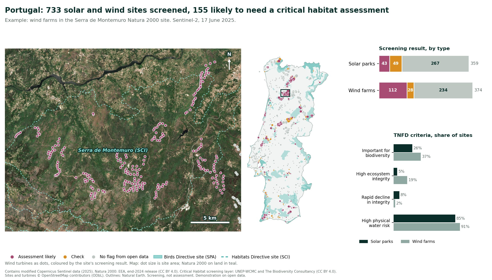
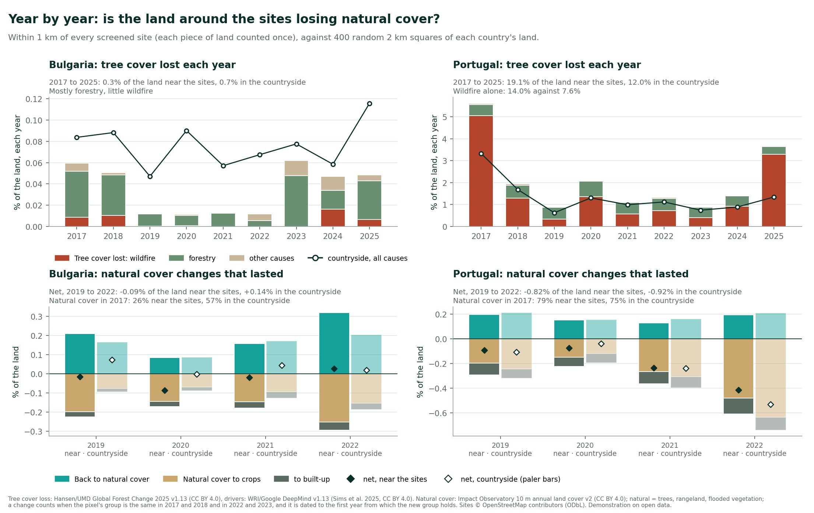
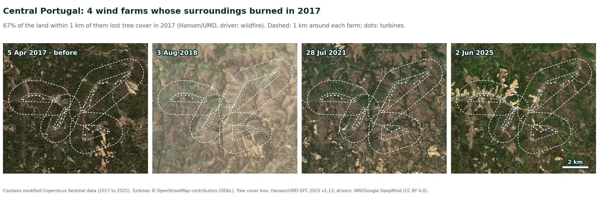
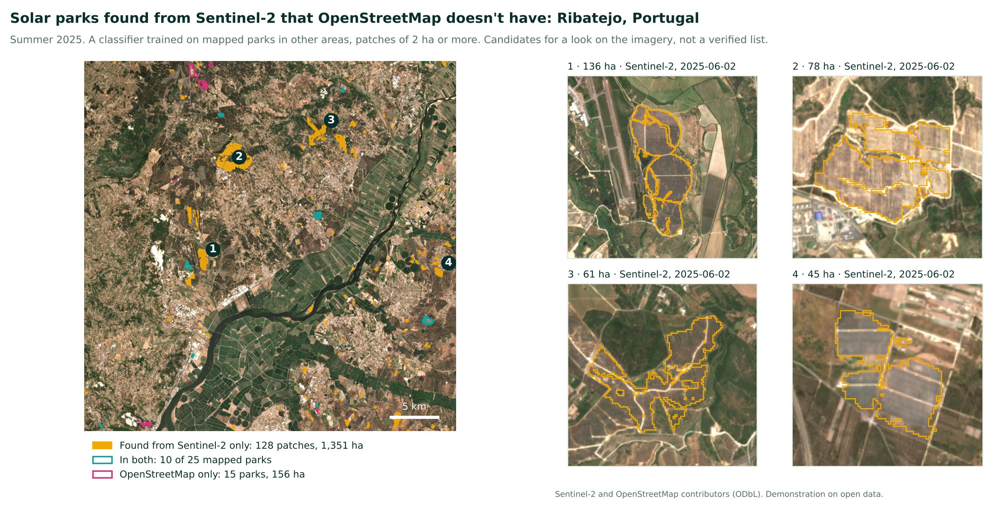

733 solar parks and wind farms in mainland Portugal, screened on open data for the metric ESRS E4, GRI 101-5 and TNFD all ask for: sites in or near sensitive locations for nature, with the distance stated.

Wind farms in the Serra de Montemuro, a Habitats Directive site, and every screened site in mainland Portugal.
19.1% of the land within 1 km lost tree cover from 2017 to 2025, against 12.0% of the countryside; wildfire alone took 14.0%, against 7.6%.

Near the sites against the countryside, year by year: Portugal is the right column.

Before, after and since: four wind farms in central Portugal whose surroundings burned in 2017.
The method, shown on one 40 × 40 km area of Ribatejo, north-east of Lisbon: the four largest finds that OpenStreetMap doesn't have, 45 to 136 ha, are all solar arrays on the imagery.

Ribatejo, summer 2025: found from Sentinel-2 only (amber), in both (teal), in OpenStreetMap only (pink), and the four largest finds up close.
How it was made: the question, data, method, checks and limits
Take the solar parks and wind farms mapped in OpenStreetMap in mainland Portugal: 733 sites of 1 ha or more, 359 solar parks and 374 wind farms. How many sit in or near a sensitive location for nature, how does the answer move with the distance, and is the land around them changing?
This is the desk exercise behind the Locate phase of the TNFD's LEAP approach, and behind the metric that ESRS E4, GRI 101-5 and TNFD all ask for: sites in or near protected areas or areas of high biodiversity importance, with the distance stated. The same screening, with the same rules, is shown for Bulgaria. For a single project going to a lender, see the critical habitat pre-screening, shown for a wind farm in Bulgaria.
Companies reporting under ESRS E4, GRI 101 or TNFD count their sites in or near sensitive locations for nature. The count is only as good as two things: the site list, and the rule for "near". TNFD doesn't fix a distance and GRI 101-5 asks for it to be stated, so the screening shows how the count moves with it.
Portugal is adding solar fast, and its wind farms stand on the same hills as many of its Natura 2000 sites. Between 2022 and 2024, solar capacity grew from 2,646 to 5,639 MW (Eurostat).
| Source | Used for | Licence |
|---|---|---|
| OpenStreetMap: solar and wind plants, wind turbines (data of 22 October 2026) | The sites | ODbL |
| Natura 2000, end-2024 release (European Environment Agency) | Birds Directive and Habitats Directive sites | CC BY 4.0 |
| Critical Habitat screening layer, basic version (UNEP-WCMC and The Biodiversity Consultancy, 2025) | Likely critical habitat | CC BY 4.0 |
| Aqueduct 4.0 (World Resources Institute) | Physical water risk | CC BY 4.0 |
| Biodiversity Intactness Index, 2017 to 2020 (Impact Observatory and Vizzuality) | Ecosystem integrity and its decline | CC BY 4.0 |
| ESA WorldCover 2021 | Land cover on and around each site | CC BY 4.0 |
| Global Forest Change 2025 v1.13 (Hansen/UMD) | Tree cover lost each year, 2017 to 2025 | CC BY 4.0 |
| Drivers of tree cover loss v1.13 (WRI and Google DeepMind) | The main cause of each loss | CC BY 4.0 |
| 10 m annual land use land cover v2, 2017 to 2023 (Impact Observatory) | Natural cover, year by year | CC BY 4.0 |
| Sentinel-2, 2017 to 2025 | The views of Serra de Montemuro and central Portugal | Copernicus free and open |
| Sentinel-2 L2A, March to October 2025 (Earth Search) | Solar parks found from their signature, in one area of Ribatejo | Copernicus free and open |
| Eurostat, electricity capacity from renewables (nrg_inf_epcrw) | Context for the site list | CC BY 4.0 |
| Natural Earth | Country outline on the map | Public domain |
Not used: WDPA and key biodiversity area data, whose terms don't allow commercial use or redistribution without permission, and the non-commercial "drill-down" version of the critical habitat layer.
The rules and distances were written down before the results and not tuned to them.
The 733 sites split between solar parks (359) and wind farms (374). Wind farms stand mostly on the hills and ridges of the north and centre, and 112 of the 155 sites inside Natura 2000 or on likely critical habitat are wind farms. Solar parks are more spread out, and 85% of them are in catchments with high physical water risk. 670 sites meet at least one of the four TNFD criteria covered here, most of them through water risk.
The count is only as good as the list. OpenStreetMap shows what volunteers have mapped, and few solar parks carry their capacity there, so the list can't be checked against the official statistics. The list has 359 solar parks over 5,232 ha, against 5,639 MW of solar in Eurostat for 2024, rooftops included. Wind farms come to about 6,600 MW from their turbines' own tags and the median size for the rest, against 5,600 MW in Eurostat. Most turbines carry no capacity tag, so that is an estimate, and being above the official figure doesn't show that no wind farm is missing.
Checking the list from satellite, on one area. Solar panels have a signature in Sentinel-2: dark in near infrared and brighter in shortwave infrared, so their moisture index (NDMI) is strongly negative, and unlike crops they look the same all season. The figure at the top runs it on one area of Ribatejo:
It runs in Python (pystac-client, odc-stac, dask, scikit-learn, rasterio, geopandas) in under an hour per area on a laptop, and the same steps run for any area. Small patches are where it errs: dark fields, scrub and roofs can look like panels, which is why every find gets a look on the imagery. The patches are in the downloads.
Is the land around the sites losing natural cover? Two yearly records answer it for the land within 1 km of every site, counted once where sites are close together: tree cover lost each year from 2017 to 2025 with its main cause, and natural cover against crops and built-up land from 2017 to 2023 (the figure at the top).
A change near a site isn't necessarily caused by the site. These records show where the land is changing, which is what TNFD's "rapid decline in ecosystem integrity" asks about, and where a monitoring visit or a closer look would start.
| Check | Result |
|---|---|
| How much the distance changes the answer | Sites inside or near Natura 2000: 17% inside, 23% within 500 m, 26% within 1 km, 34% within 2 km, 56% within 5 km. |
| What each biodiversity layer adds | Of the sites inside Natura 2000 or on likely critical habitat (155), 34 are on likely critical habitat only, outside Natura 2000; 110 are inside Natura 2000 only; 11 are both. |
| Solar parks from Sentinel-2, Ribatejo | 10 of the 25 mapped parks found. Of the 15 missed, 8 are small parks under 6 ha, 4 showed no panels yet in summer 2025 (mapped before they were built) and 3 were under cloud. The four largest finds not in OpenStreetMap are arrays on the imagery. |
Screening is not assessment. A count says where to look closer.
Run as a service, the same screening keeps up with a portfolio: a new or changed site triggers it, the reference layers are refreshed once a year, and satellite data watch each site and its surroundings. How it would run, in one drawing.
A site counted here sits in or near a sensitive location by the stated rule and distance; what that means for the site is for the assessment to say.
The first water criterion used Aqueduct's overall score, which also counts regulatory and reputational risk; TNFD asks about physical water risk, and with it 645 sites qualify instead of 130. The first decline in integrity included each site's own footprint, so a park built between 2017 and 2020 showed its own construction as decline; now only the surroundings count. The first site list included the Azores and Madeira; the screening covers mainland Portugal only.
The scripts were written with an AI agent and checked as described here; how I work with AI on GIS.
Own outputs and open data only, with every source and licence named inside. The site list is derived from OpenStreetMap and shared under the ODbL.
If you report under TNFD, ESRS E4 or GRI 101 and have a list of sites to screen, email me at ana@timebooster.ai.